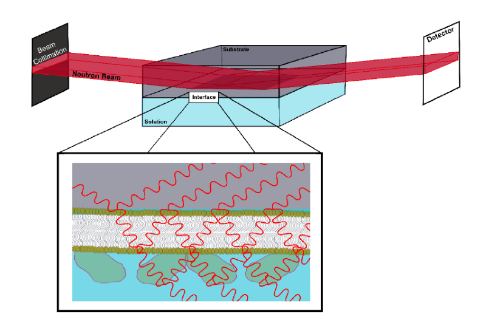
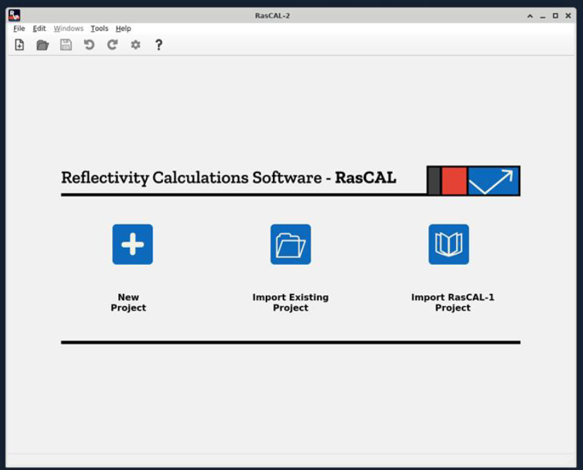
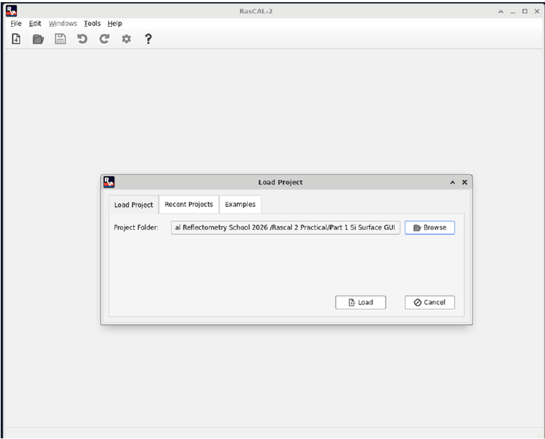
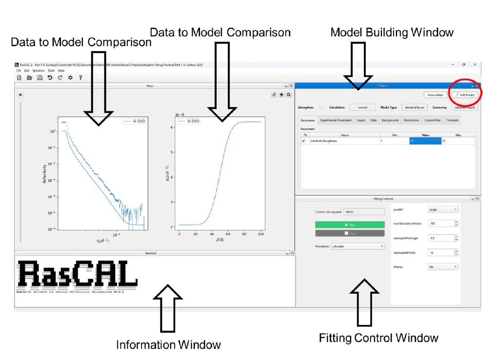
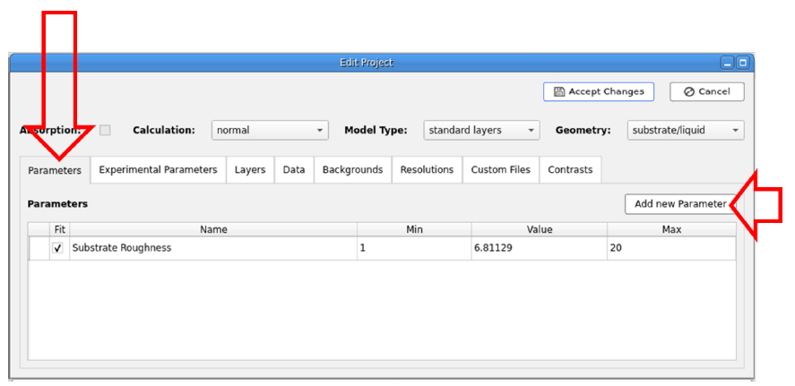
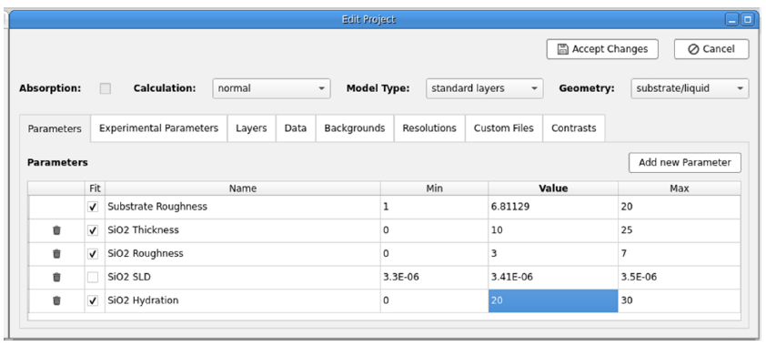
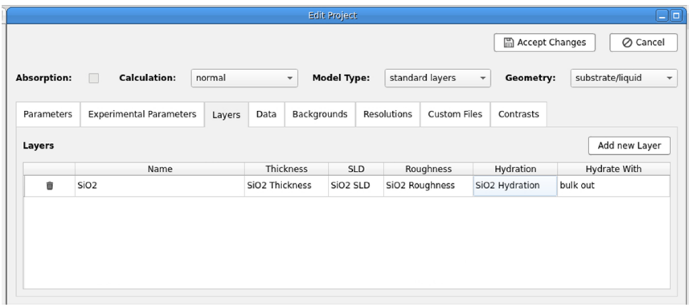
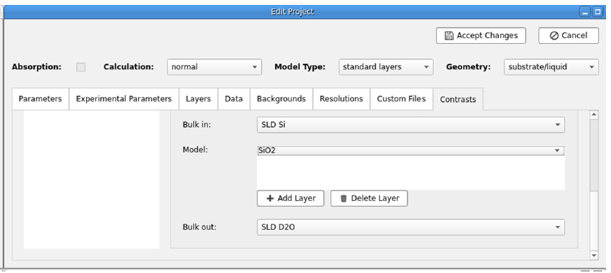

1. The Silicon-Water Interface#
The silicon water interface is a common surface used in NR studies. For these experiments, the reflection occurs within a silicon substrate.

Neutron Reflectometry in a solid-liquid flow cell. Note: the neutron beam is reflected inside of the substrate.#
Important
Remember to download and extract the tutorial data to follow along in this section.
You will begin the tutorial by fitting a bare SiO2 coated silicon-D2O interface using RasCAL-2.
Starting the Software
Start RasCAL-2, the software will load and show the following screen:

Click on Import Existing Project and browse to the tutorial data folder named Rascal 2 Practical Student and select the folder named Part 1 Si_D2O Interface and select open, then click the Load button (see below)

Setting up the model to fit
After the RasCAL-2 project has loaded you will see the following:

Hint
Rearrange the different windows in the software as you see fit
The first thing you will notice is that the real and model reflectivity data is not on the same scale, i.e. the scale factor is incorrect. There are similarities and differences between the model data (line) and the experimental reflectivity data (error bars). Specifically, the critical edge of the reflection is in the same position in both and while the general decay of the model data intensity against momentum transfer (\(Q_z\)) and the background do not match the experimental data.
Therefore, we begin fitting by setting the correct experimental parameters.
On the model building window click on the tab labelled Experimental Parameters.
Next correctly scale the data using the scale factor (do this so the model and data critical edges meet) and then set the Background for the sample (the flat region in the high \(Q_z\) regime). If you want you can fit these parameters by ticking the fit box against each parameter, selecting simplex in Fittings Controls and clicking on the Run button.
Once these are set fit the substrate roughness (the roughness between the bulk interfaces) to gain an approximate fit of the data. You will notice you get a good fit to the experimental reflectivity data producing a reflectivity profile with a defined step function.
However, the roughness will be artificially high as the model does not accurately portray the interfacial structure. The silicon substrate will have a thin (~10 \(\mathring{A}\)) silicon dioxide layer on the surface. We will now add this layer by editing the model.
Adding an interfacial layer
Click Edit Project on the Project window and you will now be able to edit the model window:

Click on the parameters tab and add the following four parameters with the following bounds:

Set the value, lower and upper bounds for each parameter as shown below. These parameters will be fitted except for SiO2 SLD so un-tick the fit box for this.
SiO2 Thickness: lower = 0 \(\mathring{A}\), value = 10 \(\mathring{A}\), upper = 25 \(\mathring{A}\)SiO2 Roughness: lower = 0 \(\mathring{A}\), value = 3 \(\mathring{A}\), upper = 7 \(\mathring{A}\)SiO2 SLD: lower = 3.41e-6 \(\mathring{A}\), value = 3.41e-6 \(\mathring{A}\), upper = 3.5e-6 \(\mathring{A}\) and do not fit (untick the fit checkbox)SiO2 Hydration: lower = 0%, value = 20%, upper = 30%Hint
The value must be set between these bounds before you start the fit.
Next on the Layers tab Add New Layer and then populate the layer with each parameter in the correct place and naming the layer appropriately:

In the Contrasts tab select the only contrast (labelled Si D2O) and at the bottom of the tab add your layer to the model section between the Bulk in and Bulk out:

Now click Accept Changes and the model should be updated with your new layer. Now rerun the fit.
You should now see that you have a new layer between the bulk phases which is rather ambiguous i.e. poorly described by the experimental data.
Activity
Think about why this is ambiguous and what might help to better resolve this layer?
Save the project to another folder File > Save To Folder so it can be used in the next section.